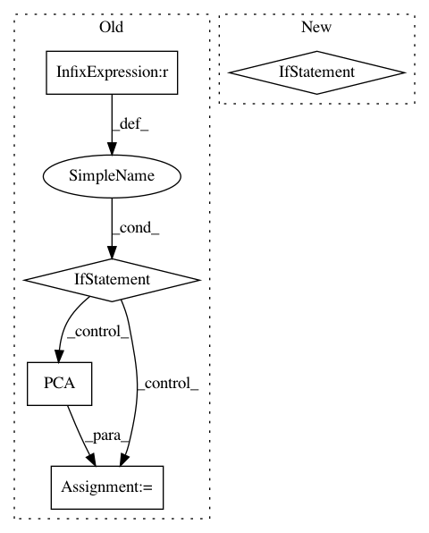

130cbadff294b686e466d430f26b2d069f6bbf59,metric_learn/mlkr.py,MLKR,fit,#MLKR#Any#Any#,85
Before Change
m = self.n_components
if m is None:
m = d
if A is None:
// initialize to PCA transformation matrix
// note: not the same as n_components=m !
A = PCA().fit(X).components_.T[:m]
elif A.shape != (m, d):
raise ValueError("A0 needs shape (%d,%d) but got %s" % (
m, d, A.shape))
// Measure the total training time
train_time = time.time()
self.n_iter_ = 0
res = minimize(self._loss, A.ravel(), (X, y), method="L-BFGS-B",
After Change
if m is None:
m = d
// if the init is the default (identity), we raise a warning just in case
if self.init is None:
// TODO:
// replace init=None by init="auto" in v0.6.0 and remove the warning
msg = ("Warning, no init was set (`init=None`). As of version 0.5.0, "
"the default init will now be set to "auto", instead of "pca". "
"If you still want to use PCA as an init, set init="pca". "
"This warning will disappear in v0.6.0, and `init` parameter"s"
" default value will be set to "auto".")
warnings.warn(msg, ChangedBehaviorWarning)
init = "auto"
else:
init = self.init
A = _initialize_transformer(m, X, y, init=init,
random_state=self.random_state,
// MLKR works on regression targets:
has_classes=False)
In pattern: SUPERPATTERN
Frequency: 3
Non-data size: 5
Instances
Project Name: metric-learn/metric-learn
Commit Name: 130cbadff294b686e466d430f26b2d069f6bbf59
Time: 2019-06-07
Author: 31916524+wdevazelhes@users.noreply.github.com
File Name: metric_learn/mlkr.py
Class Name: MLKR
Method Name: fit
Project Name: prody/ProDy
Commit Name: 0b8fa85175f95425807d6d38a38d0c6fae737e57
Time: 2018-05-14
Author: jamesmkrieger@gmail.com
File Name: prody/dynamics/nmdfile.py
Class Name:
Method Name: parseNMD
Project Name: automl/ParameterImportance
Commit Name: 4e3de39a18a8d9ad66492afffced84e8e084f4cb
Time: 2017-12-05
Author: biedenka@informatik.uni-freiburg.de
File Name: pimp/evaluator/forward_selection.py
Class Name: ForwardSelector
Method Name: run